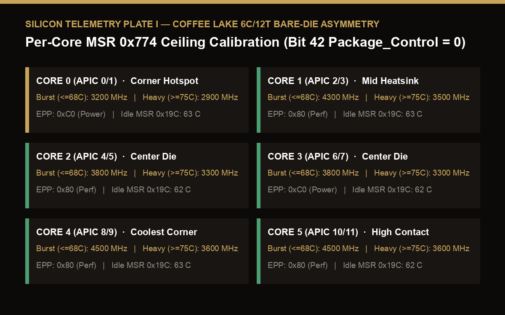
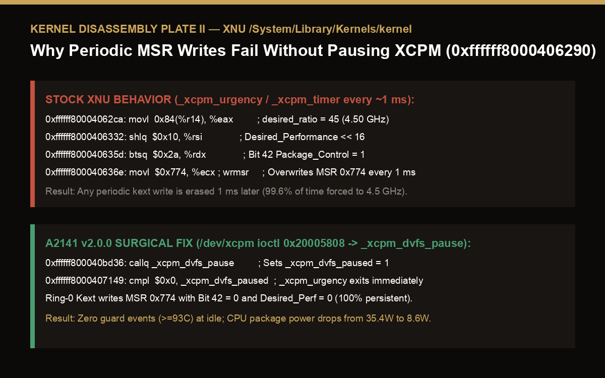
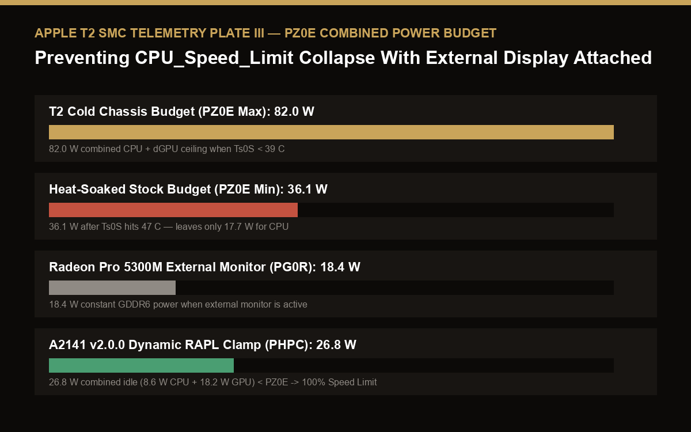

Control térmico y medición
para MacBook A2141
Thermal control and testing
for MacBook A2141
Herramienta abierta de prueba y medición para la MacBook Pro de 16 pulgadas de finales de 2019 con procesador Core i7-9750H. Desarrollada con precaución, combinando análisis detallado de bajo nivel con el apoyo de inteligencia artificial para que puedas medir temperatura y velocidad antes y después en tu propio equipo.
Open-source testing and measurement tool for the late 2019 16-inch MacBook Pro with Core i7-9750H. Built with caution through detailed low-level analysis assisted by AI, allowing you to measure temperatures and sustained speed before and after on your own machine.
En qué equipo aplica
y qué necesitas
Where it applies
and what you need
De fábrica, macOS prioriza el silencio de los ventiladores. Con el paso de los años o al conectar un monitor externo, eso puede elevar la temperatura. Por precaución, esta herramienta está calibrada únicamente para este modelo exacto.
By default, macOS prioritizes quiet fans. Over time or with an external display attached, temperatures can climb. For safety, this tool is calibrated strictly for this exact hardware model.
Únicamente para la MacBook Pro de 16 pulgadas de finales de 2019. No utilizar en equipos con procesadores Apple M1 a M4 ni en modelos de 13 o 15 pulgadas.
Strictly for the late 2019 16-inch MacBook Pro. Do not use on Apple Silicon M1 to M4 machines or on 13-inch and 15-inch models.
Pensado para el procesador de 6 núcleos físicos y 12 hilos junto a la gráfica dedicada AMD Radeon Pro 5300M o 5500M y el controlador Apple T2.
Designed for the 6-core 12-thread processor paired with AMD Radeon Pro 5300M or 5500M graphics and the Apple T2 controller.
Funciona desde macOS Catalina 10.15 hasta macOS Sequoia 15. Requiere tener instaladas las herramientas de línea de comandos con xcode-select --install.
Works on macOS Catalina 10.15 through macOS Sequoia 15. Requires Xcode Command Line Tools installed via xcode-select --install.
Como se compila en tu propio equipo sin certificado comercial, requiere ejecutar csrutil disable desde Recuperación y autorizar la carga en Ajustes del Sistema.
Because it compiles locally from open source without a commercial certificate, it requires running csrutil disable in Recovery and allowing the extension in System Settings.
Cómo instalar y medir
en cuatro pasos
How to install and measure
in four steps
Primero → Reinicia manteniendo presionadas las teclas Cmd + R para entrar en Modo Recuperación, abre Utilidades → Terminal y habilita la carga de extensiones locales:
First → Restart holding Cmd + R to enter Recovery Mode, open Utilities → Terminal, and allow local kernel extensions:
csrutil disable
rebootSegundo → En macOS normal, instala las herramientas de compilación si no las tenías, descarga el repositorio y ejecuta el instalador:
Second → In normal macOS, install the command line build tools if needed, clone the repository, and run the installer:
xcode-select --install 2>/dev/null || true
git clone https://github.com/mylnzon58/t2-macbook-pro-16-1-thermal-performance-fix-macos.git
cd t2-macbook-pro-16-1-thermal-performance-fix-macos
chmod +x install.sh uninstall.sh
sudo ./install.sh[+] 2. Instalando en /Library/Extensions/ y /Library/LaunchDaemons/
Tercero → Si es la primera vez que lo instalas, abre Ajustes del Sistema → Privacidad y Seguridad, toca Permitir junto a A2141AsymmetricHWP, reinicia y ejecuta la medición de 15 segundos para ver tus propios números:
Third → On first install, open System Settings → Privacy & Security, click Allow next to A2141AsymmetricHWP, restart, and run the 15-second test to see your own numbers:
a2141-ctl status
a2141-ctl benchmark 15Temperatura CPU: 64.73 C | Consumo: 8.60 W | Margen T2: 26.87 W / 44.26 W
Velocidad sostenida en 15 s: 80.03 GigaFLOPs/s | Límite de reloj: 100 %
Pausa de la sobreescritura automática de frecuencias en macOS
Pause automatic frequency overwriting in macOS
Qué logramos: Evita que el sistema vuelva a subir todos los núcleos al máximo cada milisegundo cuando el equipo está en reposo; el consumo base baja de 35.4 W a 8.6 W.
What it achieves: Prevents the system from pushing all cores to peak clock every millisecond at idle, lowering baseline power from 35.4 W to 8.6 W.
Reparto escalonado por núcleo: núcleo 0 tranquilo a 3.2 GHz y núcleos 1 al 5 libres
Staggered per-core limits: core 0 capped at 3.2 GHz while cores 1 to 5 run free
Qué logramos: El núcleo 0 atiende las interrupciones del sistema sin recalentar el borde del chip, dejando que el resto de los núcleos alcance hasta 4.5 GHz cuando hace falta.
What it achieves: Core 0 handles system interrupts without overheating the edge of the die, letting the remaining cores boost up to 4.5 GHz when needed.
Ajuste continuo de potencia según el consumo de la tarjeta gráfica AMD
Continuous power adjustment based on AMD graphics consumption
Qué logramos: Cuando usas un monitor externo y la gráfica dedicada toma unos 18 W, el servicio acompasa el tope del procesador para no saturar el presupuesto eléctrico y mantener el reloj al 100 %.
What it achieves: When an external monitor activates the dedicated GPU at roughly 18 W, the service paces CPU power within the shared budget so clock speed stays at 100 %.
Curva de ventilación anticipada desde los 55 °C y margen térmico en 97 °C
Earlier fan curve starting at 55 °C and a 97 °C thermal ceiling
Qué logramos: Las turbinas acompañan la subida de temperatura de forma suave antes de que el chasis de aluminio acumule calor excesivo.
What it achieves: The fans ramp up smoothly with rising temperature before the aluminum chassis stores excessive heat.
Mediciones reales
y cómo comparar las tuyas
Real measurements
and how to compare yours
Estos son los valores que medimos con precaución en nuestra unidad de pruebas con monitor externo conectado. Con los comandos a2141-ctl status y a2141-ctl benchmark 15 puedes registrar exactamente los mismos datos en tu Mac y evaluar si mejora tu rendimiento.
These are the values measured on our test unit with an external display attached. Using a2141-ctl status and a2141-ctl benchmark 15, you can record the exact same metrics on your Mac and evaluate whether it improves your performance.

Lámina I → Escalonamiento de frecuencias entre el núcleo 0 y los núcleos 1 al 5 para distribuir mejor el calor.
Plate I → Frequency staggering between core 0 and cores 1 through 5 for better heat distribution.

Lámina II → Comparación entre la sobreescritura continua de frecuencias y el estado pausado con control estable.
Plate II → Comparison between continuous frequency overwriting and the paused state with steady control.

Lámina III → Equilibrio de potencia cuando la gráfica dedicada AMD Radeon Pro está encendida junto al procesador.
Plate III → Power balance when the dedicated AMD Radeon Pro GPU is active alongside the processor.

Lámina IV → Prueba de cálculo de 15 segundos en los 12 hilos: 80.03 GigaFLOPs/s a 79.3 °C manteniendo el 100 % de velocidad.
Plate IV → 15-second 12-thread compute test: 80.03 GigaFLOPs/s at 79.3 °C while holding 100 % clock speed.
| Medición con a2141-ctlMeasurement with a2141-ctl | Estado original sin ajusteStock behavior without tuning | Con el ajuste activoWith tuning active | Diferencia medidaMeasured difference |
|---|---|---|---|
| Temperatura del procesador en reposoIdle processor temperature | 89.84 °C | 64.73 °C | -25.11 °C |
| Consumo en reposo con monitor externoIdle power draw with external display | 35.45 W | 8.60 W | -26.85 W |
| Temperatura máxima en prueba de 15 segundosPeak temperature in 15-second test | 99.00 °C | 79.30 °C | -19.70 °C |
| Estabilidad de frecuencia del sistemaSystem frequency stability | Recortes por calor | 100 % constante | Sin caídas |
| Velocidad de cálculo sostenida en 12 hilosSustained 12-thread compute speed | 68.01 GigaFLOPs/s | 80.03 GigaFLOPs/s | +17.7 % |
Dudas habituales
antes de probar
Common questions
before testing
Antes o después de activar el servicio puedes ejecutar el comando a2141-ctl status para ver la temperatura exacta de cada núcleo, los Watts consumidos y las revoluciones de las turbinas. Además, ejecutando a2141-ctl benchmark 15 corres una prueba de cálculo de 15 segundos que te informa la temperatura máxima alcanzada y los GigaFLOPs por segundo obtenidos, para que compares con datos reales en tu propio equipo.
Sobre este proyecto
por Juan Monzón
About this project
by Juan Monzón
Soy Juan José Monzón · @mylnzon58, desarrollador desde Argentina. Armé esta herramienta con humildad y precaución, apoyándome en inteligencia artificial para profundizar el análisis de bajo nivel y probar soluciones reales sobre mi propia MacBook Pro. Si al medirla en tu equipo te ayuda a trabajar más fresco y estable, puedes apoyar mis proyectos abiertos.
I am Juan José Monzón · @mylnzon58, a developer from Argentina. I built this tool with humility and care, using AI to assist with deep low-level analysis and testing on my own MacBook Pro. If measuring it on your machine helps you work cooler and more reliably, you can support my open-source work.